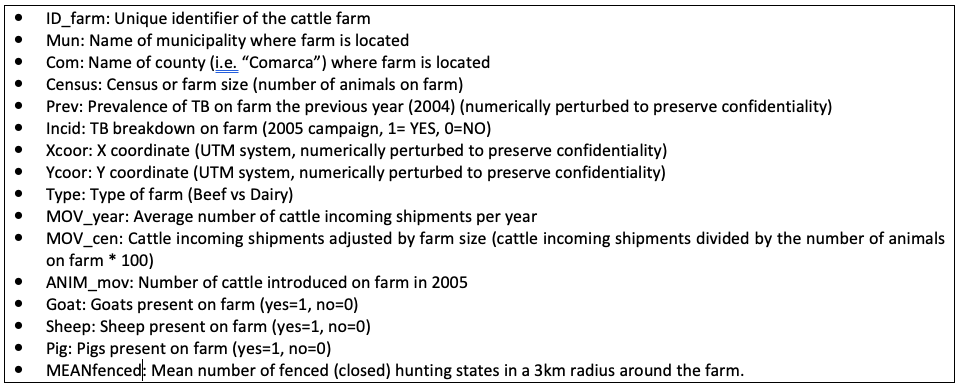
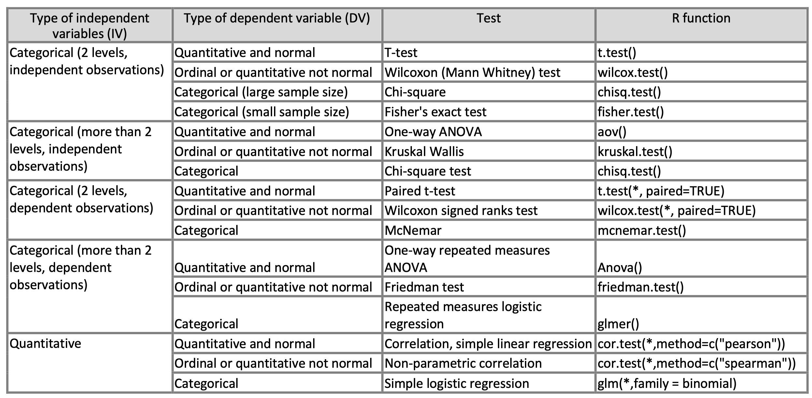
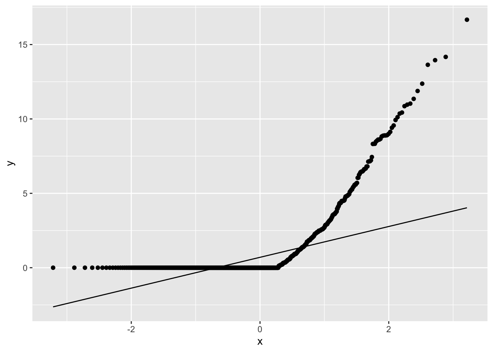
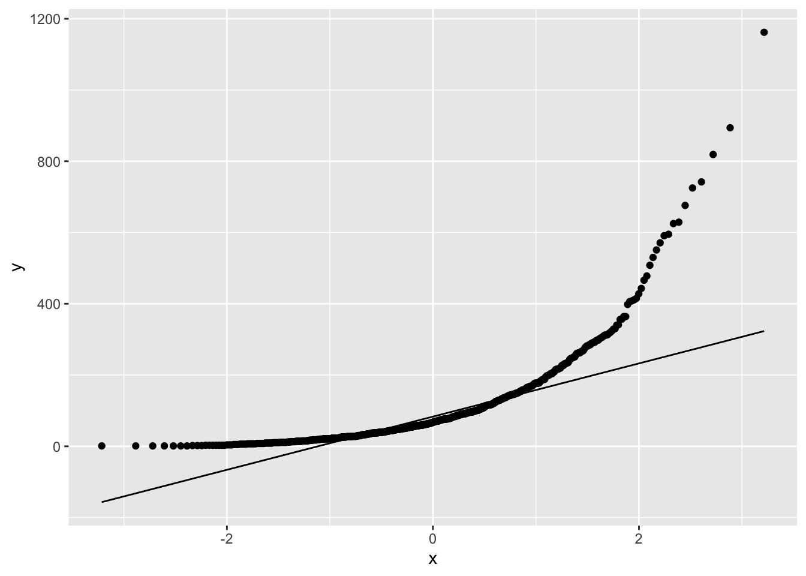
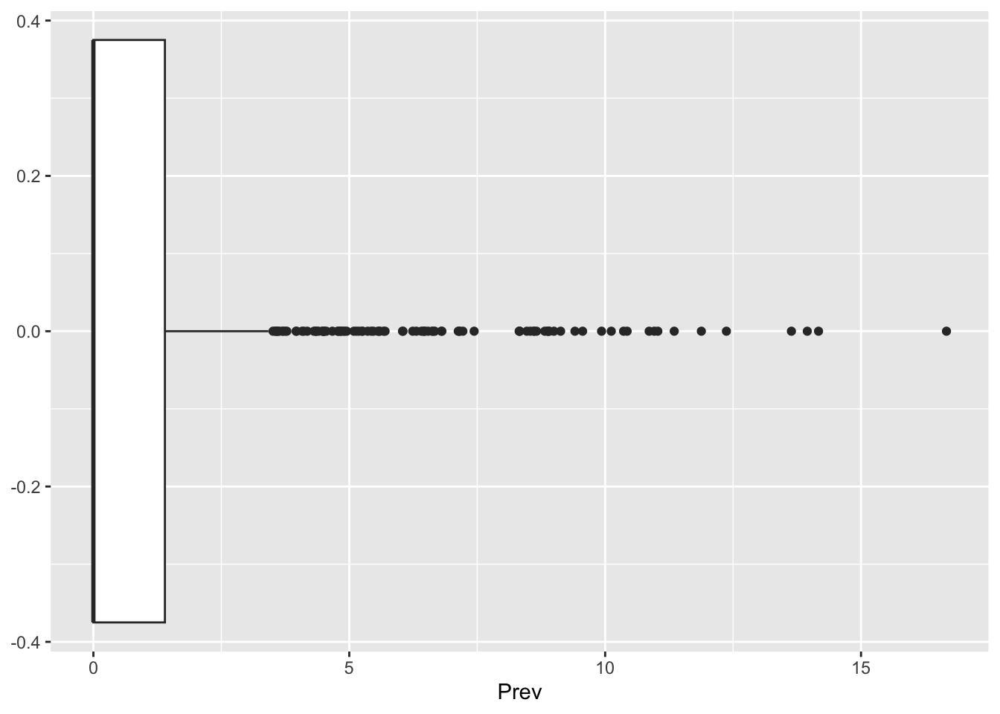

Lab 5 - Selecting the right analytical method: Fundamentals and interpretation of results.
1 Objectives
- Select the appropriate statistical test and graphical methods to compare groups and analyze different types of epidemiological data using R language.
- Be able to properly interpret the results of those statistical tests.
- Get further insight into the use and implementation of R environment for analysis of epidemiological data.
2 Instructions
- Follow the guidelines and answer the questions. Remember to send the answers in a pdf document labeled as “YOUR_LAST_NAME_Lab 5” using CANVAS before 12:00pm, February 13th.
- Do not hesitate to ask the instructor if you have any questions.
We will continue using the dataset provided dataTB.txt contains the following information regarding cattle farms in Ciudad Real during 2005:

The table below will provide you general guidelines to choose the appropriate statistical test for the different exercises of this lab. Have a look at it and continue reading below.

We are going to start exploring the potential association between hypothesized risk factors and TB prevalence and/or incidence, using bivariate analysis but, first, answer QUESTION 1 and 2. 5) The regional veterinary authorities of Ciudad Real (i.e. our study region) believe that the TB prevalence in Beef farms is significantly higher than the prevalence in Dairy farms, however, they failed to find any statistical association (using a t-test). Answer QUESTION 3 and 4. 6) Continue exploring the other variables in the dataset and their potential associations with TB prevalence or TB incidence on the farm. Answer QUESTION 5 and 6.
3 Lab portion
3.1 Loading the data
First we will load the libraries we will use and the data that we previously used on Lab 3. Remember changing the path to the location of the data in your computer:
# Load libraries --------
library(dplyr) # for data manipulation
library(ggplot2) # For visualization
# Load data ----------
EJ <- read.csv("data/dataTb.csv")
# We will recode some of the variables
EJ <- EJ %>%
mutate(
catCensus = cut(Census,breaks=quantile(EJ$Census), include.lowest=TRUE), #Create a categorical variable using quantiles
census_b = ifelse(Census > median(Census),1,0) # Create a binomial variable (YES/NO~1/0) using the median as cut-off point
)We can examine some of the variables using different functions:
## some useful functions to know more about the type of variables of your database#
str(EJ)## 'data.frame': 766 obs. of 18 variables:
## $ ID_farm : int 1 2 3 4 5 6 7 8 9 10 ...
## $ Mun : chr "GUADALMEZ" "GUADALMEZ" "GUADALMEZ" "GUADALMEZ" ...
## $ Com : chr "ALMADEN" "ALMADEN" "ALMADEN" "ALMADEN" ...
## $ Census : int 14 200 38 70 95 19 115 150 137 84 ...
## $ Prev : num 1.04 0 0 0 0.56 0 0 0 0.77 0 ...
## $ Incid : int 1 0 0 0 1 0 0 0 0 0 ...
## $ Xcoor : num 325389 327652 329353 328481 326659 ...
## $ Ycoor : num 4289645 4291586 4294230 4287725 4286466 ...
## $ Type : chr "BEEF" "BEEF" "BEEF" "BEEF" ...
## $ MOV_year : num 0 3 0.5 0.83 0.5 1.33 0.83 0.33 0.17 0.33 ...
## $ MOV_cen : num 0 1.5 1.33 1.2 0.53 7.02 0.72 0.22 0.12 0.4 ...
## $ ANIM_mov : int 0 119 14 5 26 21 11 12 1 4 ...
## $ goat : int 0 0 0 0 0 0 0 0 0 0 ...
## $ sheep : int 0 0 0 1 1 0 1 1 1 0 ...
## $ pig : int 0 0 0 0 0 0 0 0 0 0 ...
## $ MEANfenced: num 0 0 0 0 0 0 0 0 0 0 ...
## $ catCensus : Factor w/ 4 levels "[1,33]","(33,67.5]",..: 1 4 2 3 3 1 3 4 4 3 ...
## $ census_b : num 0 1 0 1 1 0 1 1 1 1 ...typeof(EJ$Census)## [1] "integer"summary(EJ)## ID_farm Mun Com Census
## Min. : 1.0 Length:766 Length:766 Min. : 1.0
## 1st Qu.:192.2 Class :character Class :character 1st Qu.: 33.0
## Median :383.5 Mode :character Mode :character Median : 67.5
## Mean :383.5 Mean : 103.5
## 3rd Qu.:574.8 3rd Qu.: 133.8
## Max. :766.0 Max. :1162.0
## Prev Incid Xcoor Ycoor
## Min. : 0.000 Min. :0.0000 Min. :325389 Min. :4241223
## 1st Qu.: 0.000 1st Qu.:0.0000 1st Qu.:359737 1st Qu.:4283430
## Median : 0.000 Median :0.0000 Median :380604 Median :4307838
## Mean : 1.248 Mean :0.2533 Mean :382761 Mean :4309850
## 3rd Qu.: 1.397 3rd Qu.:1.0000 3rd Qu.:400676 3rd Qu.:4333357
## Max. :16.670 Max. :1.0000 Max. :525037 Max. :4381235
## Type MOV_year MOV_cen ANIM_mov
## Length:766 Min. : 0.0000 Min. : 0.0000 Min. : 0.00
## Class :character 1st Qu.: 0.1700 1st Qu.: 0.1725 1st Qu.: 1.00
## Mode :character Median : 0.5000 Median : 0.5800 Median : 6.00
## Mean : 0.9076 Mean : 1.6827 Mean : 36.91
## 3rd Qu.: 1.0000 3rd Qu.: 1.5150 3rd Qu.: 30.75
## Max. :14.0000 Max. :66.6700 Max. :1154.00
## goat sheep pig MEANfenced
## Min. :0.00000 Min. :0.0000 Min. :0.0000 Min. :0.0000
## 1st Qu.:0.00000 1st Qu.:0.0000 1st Qu.:0.0000 1st Qu.:0.0000
## Median :0.00000 Median :0.0000 Median :0.0000 Median :0.1400
## Mean :0.03003 Mean :0.3159 Mean :0.1031 Mean :0.1821
## 3rd Qu.:0.00000 3rd Qu.:1.0000 3rd Qu.:0.0000 3rd Qu.:0.3200
## Max. :1.00000 Max. :1.0000 Max. :1.0000 Max. :1.0000
## catCensus census_b
## [1,33] :198 Min. :0.0
## (33,67.5] :185 1st Qu.:0.0
## (67.5,134] :191 Median :0.5
## (134,1.16e+03]:192 Mean :0.5
## 3rd Qu.:1.0
## Max. :1.03.2 Examine normality of the variables:
## Best choice is to graphically evaluate your data ##
## histograms ##
ggplot(data = EJ) +
geom_histogram(aes(Prev))ggplot(data = EJ) +
geom_histogram(aes(Census))## normal quantile-quantile plots
ggplot(data = EJ, aes(sample = Prev)) +
stat_qq() +
stat_qq_line()
ggplot(data = EJ, aes(sample = Census)) +
stat_qq() +
stat_qq_line()
## boxplots ###
ggplot(data = EJ) +
geom_boxplot(aes(Prev))
ggplot(data = EJ) +
geom_boxplot(aes(Census, Type))##### alternatively #####
## I don't like and I do not recommended to use...but there are also some normality tests ##
## e.g. Shapiro-Wilk normality test ##
#H0: sample comes from a normal distribution, if W is small and p<0.05, we reject H0. ##
shapiro.test(EJ$Prev) ##p-value here gives you the probability that the sample comes from a normal distribution(p-value <0.05, sample deviates from normality)##
## Shapiro-Wilk normality test
##
## data: EJ$Prev
## W = 0.58224, p-value < 2.2e-16Additionally, other options for estimating the nirmality of the data
can. be obtained with the Anderson-Darling test for normality. This
requires an additional package called nortest so if you
want to try it, make sure you install the library.
#similar test than the above will be the Anderson-Darling test for normality:#
# install.packages("nortest")
# library(nortest)
# ad.test(EJ$Prev) 3.3 Bivariate analysis
3.3.1 T test
### one and two-sample t-test ####
# use "?t.test" to know more about this function##
t.test(Census~Type, data=EJ)##
## Welch Two Sample t-test
##
## data: Census by Type
## t = 3.259, df = 97.151, p-value = 0.001542
## alternative hypothesis: true difference in means between group BEEF and group DAIRY is not equal to 0
## 95 percent confidence interval:
## 19.63991 80.81633
## sample estimates:
## mean in group BEEF mean in group DAIRY
## 108.97511 58.746993.3.2 Wilcoxon
### Wincoxon (or Mann-Whitney test) ###
# use "?wilcox.test" to know more about this function##
wilcox.test(Census~Type, data=EJ)##
## Wilcoxon rank sum test with continuity correction
##
## data: Census by Type
## W = 41674, p-value = 2.519e-12
## alternative hypothesis: true location shift is not equal to 0wilcox.test(Census~Type, data=EJ, exact=TRUE,alternative="greater", conf.int=TRUE)##
## Wilcoxon rank sum test with continuity correction
##
## data: Census by Type
## W = 41674, p-value = 1.26e-12
## alternative hypothesis: true location shift is greater than 0
## 95 percent confidence interval:
## 28.99998 Inf
## sample estimates:
## difference in location
## 38.00007 ##alternatively, the same thing than above:###
wilcox.test(EJ$Census[EJ$Type=="BEEF"], EJ$Census[EJ$Type=="DAIRY"], exact=TRUE,alternative="greater")##
## Wilcoxon rank sum test with continuity correction
##
## data: EJ$Census[EJ$Type == "BEEF"] and EJ$Census[EJ$Type == "DAIRY"]
## W = 41674, p-value = 1.26e-12
## alternative hypothesis: true location shift is greater than 0## to compute exact p-values with ties (i.e. ties="zeroes" --> a tie occur when the value of the observation is equal to the hypothesized median##
install.packages("coin")
library(coin)
# use ?wilcox_test to know more about this function##
#you may try to run the two next lines below but may take time!...
#w<-wilcox_test(Census~Type, data=EJ, distribution="exact",alternative="greater", conf.int=TRUE) ##note that this may take time as it is an exact calculation!!
#print(w)
wilcox_test(Prev~factor(goat), data=EJ, distribution="asymptotic",alternative="greater", conf.int=TRUE)
wilcox_test(Prev~factor(goat), data=EJ, distribution="exact",alternative="greater", conf.int=TRUE)3.3.3 Chi-squared
## Pearson's Chi-squared test ###
# use ?chisq.test to know more about this function##
chisq.test(EJ$Incid, EJ$census_b)##
## Pearson's Chi-squared test with Yates' continuity correction
##
## data: EJ$Incid and EJ$census_b
## X-squared = 15.248, df = 1, p-value = 9.425e-053.3.4 Fishers
## Fisher's exact test ###
# use ?fisher.test to know more about this function##
fisher.test(EJ$Incid, EJ$census_b)##
## Fisher's Exact Test for Count Data
##
## data: EJ$Incid and EJ$census_b
## p-value = 8.889e-05
## alternative hypothesis: true odds ratio is not equal to 1
## 95 percent confidence interval:
## 1.386874 2.781627
## sample estimates:
## odds ratio
## 1.9594963.3.5 Kruskal-Wallis
### Kruskal-Wallis Rank Sum Test ###
# use ?kruskal.test to know more about this function##
kt<-kruskal.test(Census~Type, data=EJ)
print(kt)##
## Kruskal-Wallis rank sum test
##
## data: Census by Type
## Kruskal-Wallis chi-squared = 49.035, df = 1, p-value = 2.514e-12str(kt) ##to explore more about the structure of this function and being able to call specific terms as below ### List of 5
## $ statistic: Named num 49
## ..- attr(*, "names")= chr "Kruskal-Wallis chi-squared"
## $ parameter: Named int 1
## ..- attr(*, "names")= chr "df"
## $ p.value : num 2.51e-12
## $ method : chr "Kruskal-Wallis rank sum test"
## $ data.name: chr "Census by Type"
## - attr(*, "class")= chr "htest"kt$statistic ## to get only the Kruskal-Wallis chi-squared statistic ### Kruskal-Wallis chi-squared
## 49.03499kt$p.value ## to get only the p-value #### [1] 2.514368e-123.3.6 Pairwise differences
##pairwise differences ###
pairwise.wilcox.test(EJ$Prev, EJ$catCensus, p.adj="bonferroni", exact=F, paired=F)##
## Pairwise comparisons using Wilcoxon rank sum test with continuity correction
##
## data: EJ$Prev and EJ$catCensus
##
## [1,33] (33,67.5] (67.5,134]
## (33,67.5] 0.013 - -
## (67.5,134] 8.8e-08 0.049 -
## (134,1.16e+03] 2.2e-06 0.280 1.000
##
## P value adjustment method: bonferroni3.3.7 ANOVA
### Analysis of Variance ###
av<-aov(EJ$Prev~EJ$catCensus)
summary(av)## Df Sum Sq Mean Sq F value Pr(>F)
## EJ$catCensus 3 50 16.534 2.728 0.0431 *
## Residuals 762 4618 6.061
## ---
## Signif. codes: 0 '***' 0.001 '**' 0.01 '*' 0.05 '.' 0.1 ' ' 1print(av)## Call:
## aov(formula = EJ$Prev ~ EJ$catCensus)
##
## Terms:
## EJ$catCensus Residuals
## Sum of Squares 49.602 4618.378
## Deg. of Freedom 3 762
##
## Residual standard error: 2.461882
## Estimated effects may be unbalancedcoefficients(av)## (Intercept) EJ$catCensus(33,67.5]
## 0.8907576 0.2766478
## EJ$catCensus(67.5,134] EJ$catCensus(134,1.16e+03]
## 0.6824885 0.4807008par(mfrow=c(2,2), mar=c(4,4,4,4))
plot(av)3.3.8 Correlation
3.3.8.1 Pearson
#### Correlation tests ###
#Pearson correlation##
cor.test(EJ$Prev, EJ$Census, method=c("pearson"))##
## Pearson's product-moment correlation
##
## data: EJ$Prev and EJ$Census
## t = 0.46666, df = 764, p-value = 0.6409
## alternative hypothesis: true correlation is not equal to 0
## 95 percent confidence interval:
## -0.05402060 0.08761247
## sample estimates:
## cor
## 0.016880623.3.8.2 Spearman
#Spearman correlation##
cor.test(EJ$Prev, EJ$Census, method=c("spearman"))##
## Spearman's rank correlation rho
##
## data: EJ$Prev and EJ$Census
## S = 59399389, p-value = 7.303e-09
## alternative hypothesis: true rho is not equal to 0
## sample estimates:
## rho
## 0.2070466cor.test(EJ$MOV_year, EJ$Census, method=c("spearman"))##
## Spearman's rank correlation rho
##
## data: EJ$MOV_year and EJ$Census
## S = 48037938, p-value < 2.2e-16
## alternative hypothesis: true rho is not equal to 0
## sample estimates:
## rho
## 0.35871653.3.9 Regression
#simple logistic regression##
m1<-glm(EJ$Incid~EJ$Census, family=binomial(link="logit"))
summary(m1)##
## Call:
## glm(formula = EJ$Incid ~ EJ$Census, family = binomial(link = "logit"))
##
## Coefficients:
## Estimate Std. Error z value Pr(>|z|)
## (Intercept) -1.1988861 0.1101081 -10.888 <2e-16 ***
## EJ$Census 0.0010986 0.0006542 1.679 0.0931 .
## ---
## Signif. codes: 0 '***' 0.001 '**' 0.01 '*' 0.05 '.' 0.1 ' ' 1
##
## (Dispersion parameter for binomial family taken to be 1)
##
## Null deviance: 866.95 on 765 degrees of freedom
## Residual deviance: 864.22 on 764 degrees of freedom
## AIC: 868.22
##
## Number of Fisher Scoring iterations: 44 Questions
- What type of variables do you have in the “dataTB” database? Provide
a table in which you include the name of the variable in the first
column and the type of variable in the second column (i.e. use for the
type of variable the term “categorical”, “ordinal” or “quantitative”).
[TIP: no need to do the table in R, just use
str(),typeof()andsummary()functions to support the creation of the table]. - Are all the quantitative variables of your database normally
distributed? Use graphs to support your answer. Provide two figures: one
for the histograms and other for the quantile-quantile plots to support
your answer [TIP: use
geom_hist()andstat_qq()functions]. - Do you believe that the t-test is the best option to respond to this question? Justify your answer. Try to reproduce the analysis conducted by the regional veterinary authorities (i.e. t-test) and provide the code and the results.
- Which (more appropriate) statistical test would you use to support (or reject) with statistical evidence the hypothesis of the regional veterinary authorities? Provide the R-code to run the statistical analysis, the results and an interpretation of your findings. [Note: consider the information obtained in question 2 and the table provided above to decide the appropriate type of test to use]. Compare this result with the one obtained in question 3.
- Statistically evaluate whether or not there are significant
differences in TB prevalence in the four categories of farms using the
EJ$catCensus variable. Which test would you use for this? Provide the
R-code, the results and the interpretation of your findings. Also
provide a boxplot to support your results [Tip: use the
geom_boxplot()function]. - Select an appropriate test to evaluate the statistical association between TB prevalence and a) the number of incoming shipments of cattle per year, b) presence or absence of sheep on farm and, c) mean number of fenced hunting states in a 3km radius around the farm. Provide the code, the results and an interpretation of your findings. Now, do the same but with TB incidence (using the same 3 predictors)